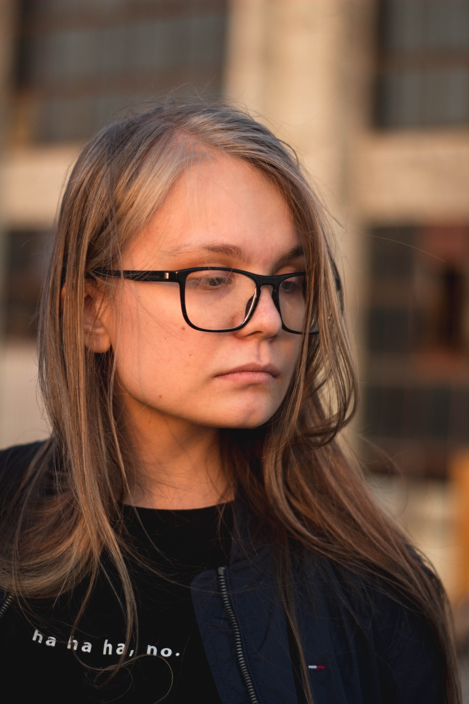

Меня зовут Савельева Милана и я начинающий фотограф.
Начала увлекаться фотографией в 13 лет и до сих пор продолжаю
заниматься этим делом, хоть и с некоторыми большими творческими перерывами. Никогда нигде не училась фотографировать.
Всё, что я знаю о фотосъёмках почерпнула из практики и видео-уроков. Я просто брала фотоаппарат и шла снимать, то что
нравится. Не всегда удачно, не всегда красиво, но всё приходит с практикой. Спасибо моим друзям, что соглашались побыть
моделями для моих работ.
Снимаю на Canon 60D и объектив 55mm. И в данный момент начала посвящать съёмкам больше времени,
так как планирую работать в этой сфере, поэтому добро пожаловать на мой сайт!